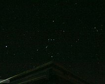

{kind=link}
{kind=link}
Perseus with Comet Holmes
The classical outline of the Perseus constellation. The bright, extended object was Comet Holmes in Nov 1, 2007. Taken with Canon Digital Rebel XT on a…
{kind=link}
Cassiopeia and Perseus.
This picture contains the constellations Cassiopeia (top right), Andromeda(left), and Perseus (bottom right). Taken on 9/12/10 with the Canon Digital Rebel XT. …
{kind=link}
"Supermoon" rising at ONU.
The full moon rising over the ONU campus, during the March 19, 2011 "supermoon". This happens when the full moon occurs at perigee, and the Moon is closest to…

Green aurora
Aurora borealis looking due north from the ONU Campus. Taken with Canon Digital Rebel XT. During the great display of 10/24/11.
{kind=link}
Green auroral bands.
Green aurora to the north-northeast from the ONU Observatory. Taken with Canon Digital Rebel XT. During the great display of 10/24/11.
{kind=link}
Green auroral bands with airplane
Green aurorals bands with airplane. Taken with Canon Digital Rebel XT. During the great display of 10/24/11.
{kind=link}
The Big Dipper and green aurora borealis.
The Big Dipper and green aurora borealis taken from the south side of the ONU Observatory. Taken with Canon Digital Rebel XT. During the great display of…
{kind=link}
Great aurora of 10/24/11 near its peak.
The aurora was showing rapidly changing "curtains" in red during the peak of the great display of 10/24/11. Taken with Canon Digital Rebel XT, 20 sec exposure…
{kind=link}
Red aurora near the peak of the display of 10/24/11.
Red and green aurora above roof of ONU Observatory. Taken with Canon Digital Rebel XT. During the great display of 10/24/11.
{kind=link}
Red and green aurora over the observatory.
Red and green aurora over the observatory. Taken with Canon Digital Rebel XT, 13 sec exposure. During the great display of 10/24/11.

Green auroral "curtains" with the Big Dipper.
Green auroral curtains seen with Big Dipper in the back ground. Red aurora is seen at higher altitudes corresponding to charged solar wind particles streaming…
{kind=link}
Red and green makes yellow!
Overlapping curtains of red and green emission makes a yellow aurora.
Taken with Canon Digital Rebel XT. During the great display of 10/24/11.
Taken with Canon Digital Rebel XT. During the great display of 10/24/11.
{kind=link}
Corona Borealis and Arcturus.
This photo has the constellation Corona Borealis (the curved U-shape in the lower half of the photo) and the bright star Arcturus in the constellation Bootes…
{kind=link}
Stars and Clouds
A GIF animation of stars and clouds in the night sky. Taken with Canon Digital Rebel XT on 1/4/12.
{kind=link}
Big Dipper Star trail
A long exposure photograph of Ursa Major, showing how the stars rotate around the north celestial pole. In the lower left of the photo, note that stars much…

{kind=link}
Orion above the ONU Observatory.
The constellation Orion, with the corner of the ONU Observatory helpfully pointing to the bright blue star Rigel. Also visible are Orion's belt of three stars,…
{kind=link}
Jupiter and Venus together.
Conjunction of Jupiter and Venus on Mar 13, 2012, with some Astronomy Club members observing with the 8-inch Meade.
{kind=link}
Sunset Clouds
A GIF animation of the clouds passing over as the sun sets, with a wind turbine in the background. Taken with Canon Digital Rebel XT on 8/3/13.
{kind=link}
Cassiopeia Star Trail
Cassiopeia star trail. The spottiness of the trails reveal that clouds were passing during the exposure. About 4.2 minute exposure time with the Digital Rebel…
{kind=link}
Planets and stars in the western sky.
Planets and stars in the western sky. Labels reveal that Jupiter and Venus were close to Gemini. Taken 6/2/15 with the Canon Digital Rebel XT.
{kind=link}
Albireo - colorful double star.
Albireo, a colorful double star in the constellation Cygnus. 30 sec exposure with the Canon T5i on the Celestron 11-inch.
{kind=link}
Cirrus and sun Dog with the 12-inch telescope.
The cirrus cloud above the 12-inch looks a lot like a flying bird! To the right of the 12-inch is a sun dog or parhelion. Images of uniform light sources,…
{kind=link}
Crescent Moon and Venus.
Crescent Moon and Venus on 4/17/18. The dark part of the Moon is faintly lit by "Earthshine". A 2.5 sec exposure with the Canon T5i using its kit lens. The…

The sky around Cassiopeia.
A wide-field view of the sky around Cassiopeia. The 30 second exposure is deep enough to reveal the Andromeda Galaxy (M31). The other connector lines are…
Sky Animation
Several exposures were combined to form this MP4 video of the night sky, in which the rotation of the Earth is apparent through the motion of the stars.
{kind=link}
The ISS in the twilight sky.
The ISS in the twilight sky. 1/5 sec with the Canon T5i using the 300 mm zoom lens.
{kind=link}
The ISS slightly resolved.
The ISS showing a little bit of its solar panel structure. Extracted from a video taken with the Canon T5i.
{kind=link}
Deneb and Cygnus the Swan.
Deneb and Cygnus the Swan. The star Deneb (center) is at the tail of the swan, but the top of the Northern Cross asterism. Below Deneb is NGC 7000, the North…

Saturn and Jupiter approaching conjunction.
Saturn and Jupiter on 12/9/20. This was a few weeks before the great conjunction of 12/21/20. Canon T5i with a 300 mm zoom lens. Picture was cropped down.
{kind=link}
Conjunction of Saturn and Jupiter - with labels.
Conjunction of Saturn and Jupiter on Dec 20, 2020. Just before the closest approach, Saturn and Jupiter were about 8 arcminutes apart. This exposure was just…
{kind=link}
Conjunction of Saturn and Jupiter on 12/20/20.
Conjunction of Saturn and Jupiter on 12/20/20. (Labelled) The two planets were only about 8 arcminutes apart. This was a 0.6 sec exposure at ISO 400 taken…
{kind=link}
Trails of airplane and satellite?
Trails of airplane (on right) and satellite (left) captured on the 125 sec exposure centered on Draco (the northern sky) on the night of the Herculids meteor…
{kind=link}
Meteor in Hercules. Lyra & Draco nearby.
Meteor coming out of Hercules. The "keystone" asterism in Hercules is top and center. 120 sec tracked exposure with the Canon T5i piggybacking on the Meade…
{kind=link}
Meteor (Herculid) in Hercules.
Meteor (Herculid) in Hercules. 392 sec exposure with the Canon T5i piggybacking on the Meade 12-inch. Many star clouds and dust lanes in the Milky Way are…
{kind=link}
Meteor at the Hercules/Ophiuchus boarder.
A Herculid meteor at the Hercules/Ophiuchus boarder. 61 sec with the T5i riding on the Meade 12-inch.
Light Pollution Movie
Canon T5i movie showing the effects of local light pollution near the ONU Observatory. Notice the rays of light emanating from over the tree in the bottom right…
{kind=link}
Big Dipper Star Trail
220 second star trail of the Big Dipper in Ursa Major. Taken with Canon Digital Rebel XT.
{kind=link}
Little Dipper Star Trail
158 second star trail of the Little Dipper in Ursa Minor. Taken with Canon Digital Rebel XT.
{kind=link}
{kind=link}